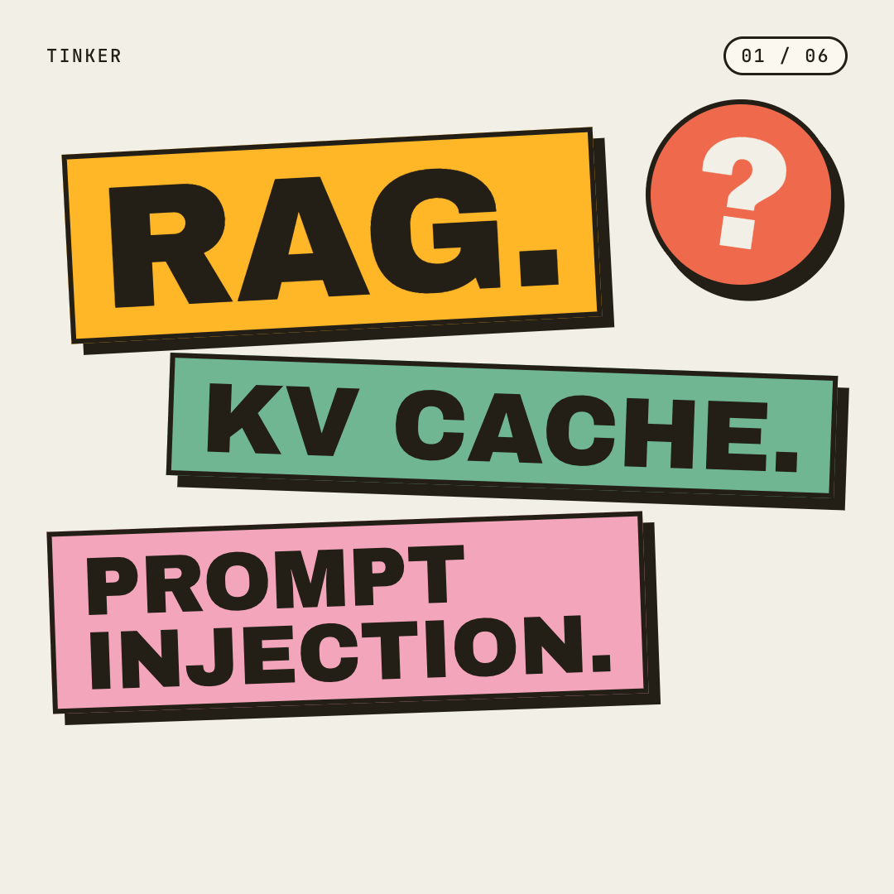
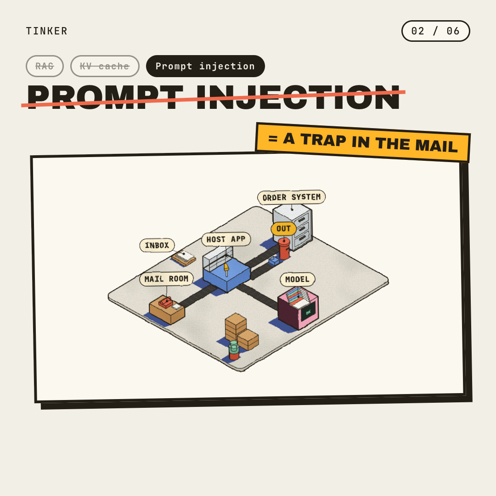
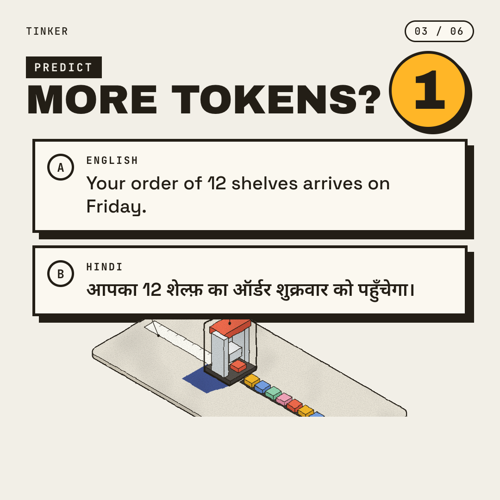
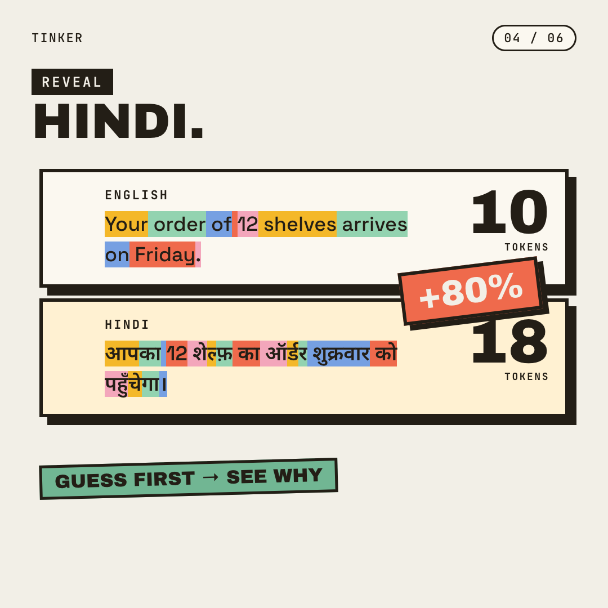
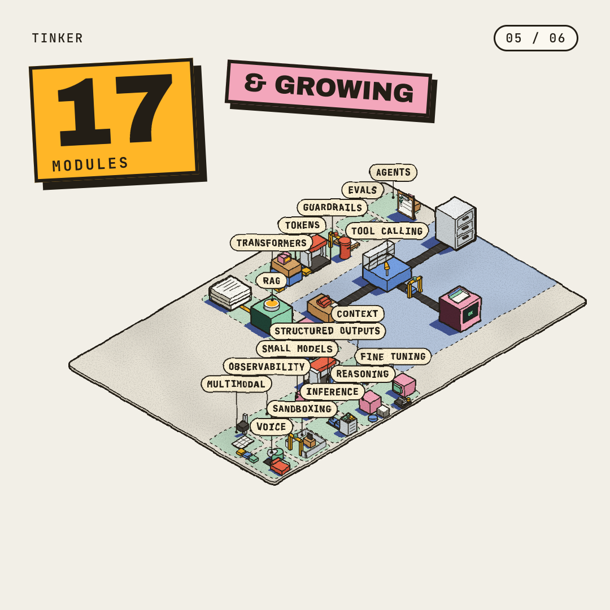
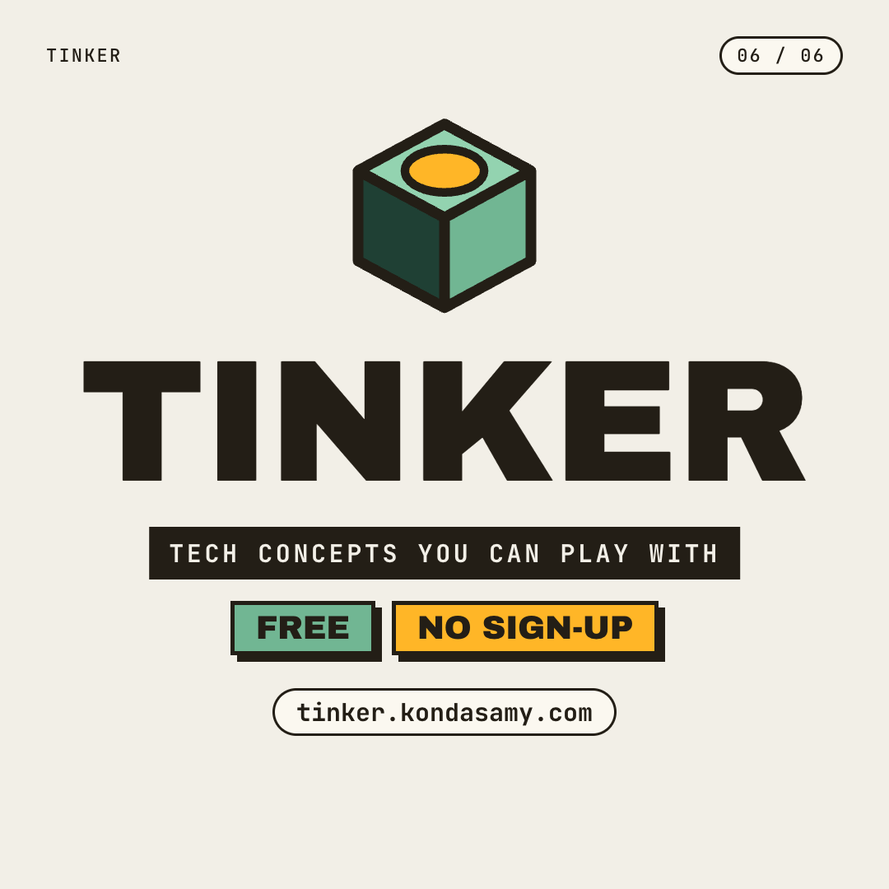

1080×1080 · ~37s · X + LinkedIn · voice: Liam (ElevenLabs) · music: ElevenLabs

RAG, KV cache, prompt injection slam on as tilted ink blocks; a tomato “?” lands.

Each word is struck through and its Tinker drawing crashes in: the RAG pipeline, the KV shelf, the mail room.

Same order message in English and Hindi; the viewer picks; 3-2-1 countdown.

Both sentences split into GPT-4o token tiles; 10 vs 18 count up; +80% stamp lands on Hindi.

Tight on one plot, zoom out to the whole board; plots hop; counter ticks to 17, “& growing”.

Cube logo springs in, TINKER lockup, Free · No sign-up, tinker.kondasamy.com holds.